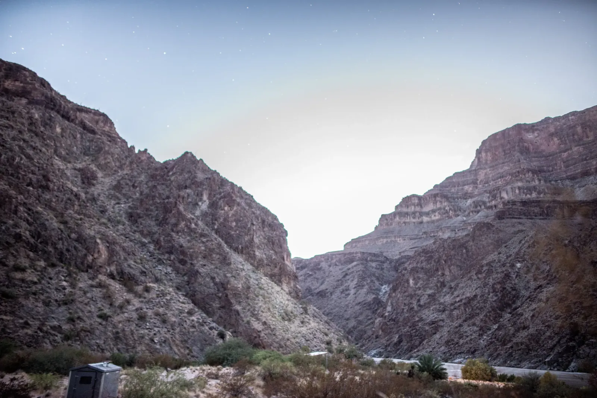

Below the Rim
At the South Rim, pinyon and juniper crowd the edge, and past them there is nothing but air, then red and purple rock stepping down in ledges to what looks like the Tonto Platform, where a thin line of trail cuts across the flat. A few ridges out, everything fades into haze. The rock records almost two billion years of Earth's history, oldest at the bottom and youngest at the rim. Along the edge, a flat-capped boulder balances on a pale stem. The dog, in a red bandana, panted through all of it.
From the rim I drove the Jeep out to Peach Springs, a Hualapai town on old Route 66, to get into the canyon through a different door. Diamond Creek Road runs through tribal land, so you need a permit from the Hualapai Tribe. It is also one of the very few roads that lets you drive down to the Colorado River inside the Grand Canyon. It is dirt the whole way, following the creek between walls that squeeze closer with every mile, jagged dark rock down low and layered tan cliffs above. The road crosses the creek, and afternoon storms are common in August, so check the sky before you drop in. A storm upstream can fill that wash in minutes.

Twilight set the ridge tips glowing and turned the sky peach. The camp was a gravel flat with a timber ramada and an outhouse with a better view than most hotel rooms! An old pickup's headlights lit the ramada like a porch light, and once the color left the walls, the sky filled in star by star. The Milky Way slid across the gap between the cliffs, and long exposures pulled out its dark dust lanes. The Jeep's lights turned a butte orange, and even the creek crossing glowed red under the stars. From the rim the canyon looked endless. From the bottom, with the galaxy stretched over its walls, it looked like a small notch in something much bigger.